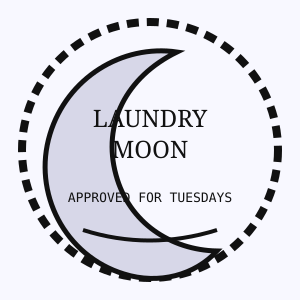

☾Residents are advised that the washing machines will accept moonlight as partial payment on Tuesdays, provided the lint trap is free of feathers, foil, and ancestral buttons.
Machine B has been observed humming “Greensleeves.” Do not harmonize. Harmonizing voids the rinse.
Lost sock claims must be filed before the moon becomes full or after it becomes embarrassed.
☑ I have read the dampness clause
Failure to comply may result in towels smelling like rain from another county.